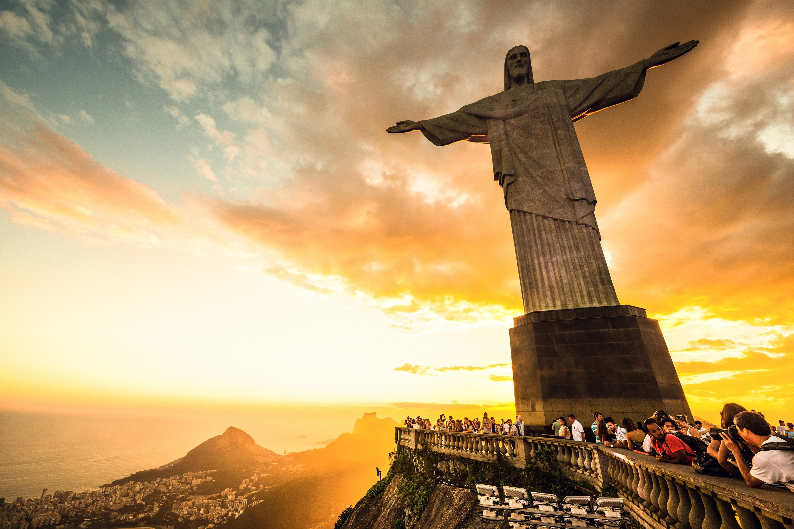
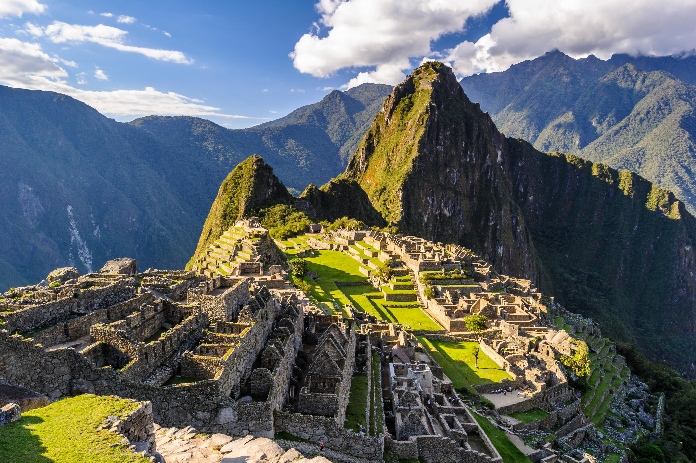
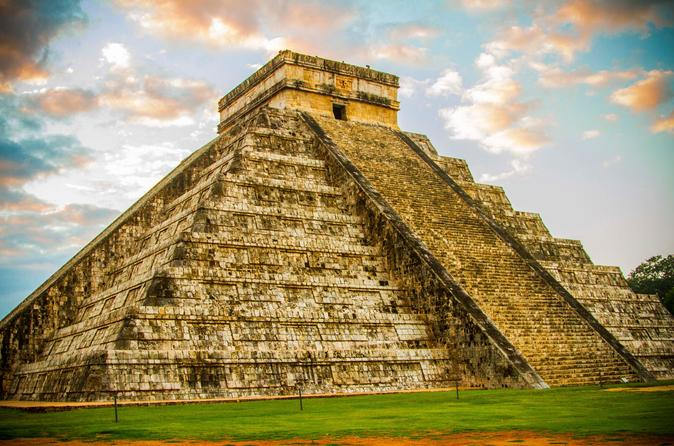
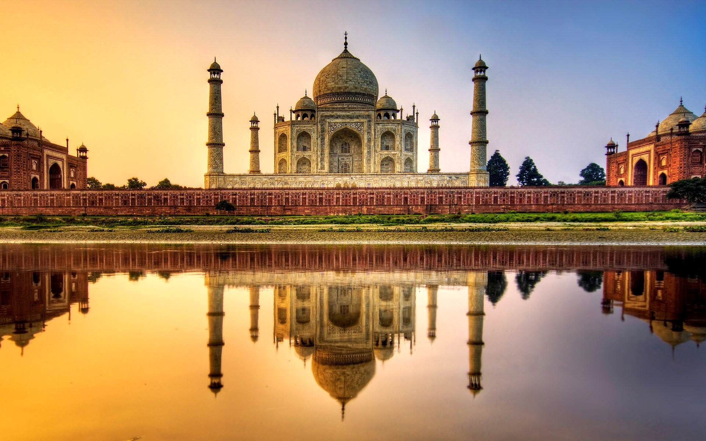
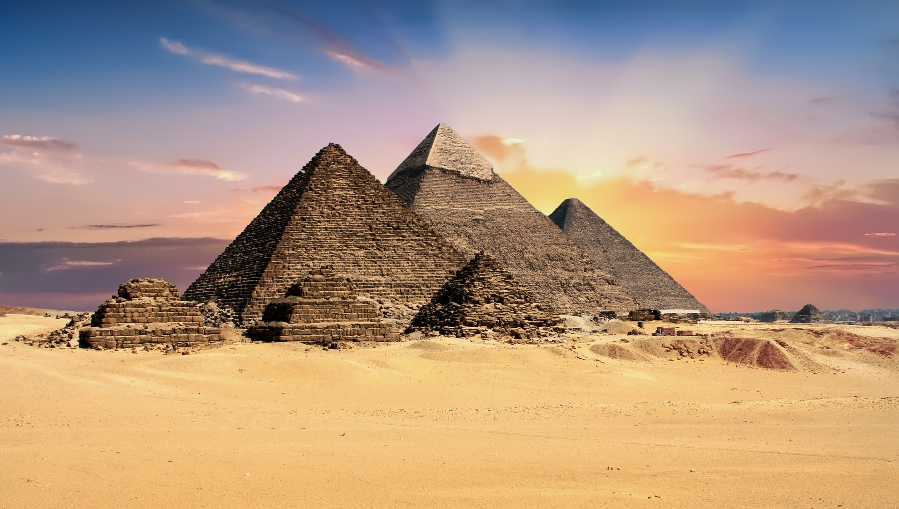

In 2007, more than 100 million people voted to declare the New Seven Wonders of the World. New7Wonders of the World (2000–2007) was a campaign started in 2000 to choose Wonders of the World from a selection of 200 existing monuments. The popularity poll was led by Canadian-Swiss Bernard Weber and organized by the New7Wonders Foundation based in Zurich, Switzerland, with winners announced on 7 July 2007 in Lisbon.
The New7Wonders Foundation said that more than 100 million votes were cast through the Internet or by telephone. Voting via the Internet was limited to one vote for seven monuments per person/identity, but multiple voting was possible through telephone. Hence the poll was considered unscientific. According to John Zogby, founder and current President/CEO of the Utica, New York-based polling organization Zogby International, New7Wonders Foundation drove "the largest poll on record".The following list of seven winners is presented without ranking, and aims to represent global heritage.
THE GREAT WALL OF CHINA
Location: China
Built: 5th Century BC to 16th Century BC
Built between the 5th century B.C. and the 16th century, the Great Wall of China is a stone-and-earth fortification created to protect the borders of the Chinese Empire from invading Mongols . The Great Wall is actually a succession of multiple walls spanning approximately 4,000 miles, making it the world's longest manmade structure. There’s a good reason it’s called great – it stretches the equivalent of Sydney to Perth and back and is more than 2300 years old. For this reason, the Great Wall of China, declared a UNESCO World Heritage Site in 1987, attracts up to 70,000 visitors each day during the peak season.
These numbers mean the time of year you choose to visit, even time of day, and the section you head to will affect your experience. “The Great Wall of China is one of the most famous sites in the world and is a popular bucket-list destination for tourists,” Lachlan Burnet, of Wendy Wu Tours, says. The Great Wall has been rebuilt, maintained, and enhanced over various dynasties; the majority of the existing wall is from the Ming Dynasty (1368–1644).
Eight sections of the Great Wall of China are open to the public and the most popular is Badaling, about 70km from Beijing. It’s a restored and well-maintained section and has great access, even for wheelchairs.
But it is also one of the most commercial sections with shops, tourist traps and even a McDonald’s near the entrance.
PETRA
Location: Ma'an Governorate, Jordan
Built: 1922 to 1931
Declared a World Heritage Site in 1985, Petra was the capital of the Nabataean empire of King Aretas IV, and likely existed in its prime from 9 B.C. to A.D. 40. The members of this civilization proved to be early experts in manipulating water technology, constructing intricate tunnels and water chambers, which helped create an pseudo-oasis. A number of incredible structures carved into stone, a 4,000-seat amphitheater and the El-Deir monastery have also helped the site earn its fame.
In 1850, the idea of building a religious monument was first suggested by a Catholic Priest. It wasn't until 1920 when a group petitioned for support to build a landmark statue that it became a reality. The design was chosen from several ideas and construction began in the 1920s, taking nine years to finish. Today, Christ the Redeemer is one of the New Seven Wonders of the World.
Petra lies on the slope of Jabal Al-Madbah in a basin among the mountains which form the eastern flank of Arabah valley that run from the Dead Sea to the Gulf of Aqaba. Petra is believed to have been settled as early as 9,000 BC, and it was possibly established in the 4th century BC as the capital city of the Nabataean Kingdom. The Nabataeans were nomadic Arabs who invested in Petra's proximity to the trade routes by establishing it as a major regional trading hub.
CHRIST THE REDEEMER

Location: Corcovado mountain, Rio de Janeiro, Brazil
Built: 1922 to 1931
The Art Deco-style Christ the Redeemer statue has been looming over the Brazilians from upon Corcovado mountain in an awe-inspiring state of eternal blessing since 1931. The 130-foot reinforced concrete-and-soapstone statue was designed by Heitor da Silva Costa and cost approximately $250,000 to build - much of the money was raised through donations. The statue has become an easily recognized icon for Rio and Brazil.
In 1850, the idea of building a religious monument was first suggested by a Catholic Priest. It wasn't until 1920 when a group petitioned for support to build a landmark statue that it became a reality. The design was chosen from several ideas and construction began in the 1920s, taking nine years to finish. Today, Christ the Redeemer is one of the New Seven Wonders of the World.
MACHU PICCHU

Location: Cuzco Region, Peru
Built: Founded 1450 and Abandoned 1572 by the Inca civilization
An Incan city of sparkling granite precariously perched between 2 towering Andean peaks, is thought by scholars to have been a sacred archaeological center for the nearby Incan capital of Cusco. Built at the peak of the Incan Empire in the mid-1400s, this mountain citadel was later abandoned by the Incas. The site remained unknown except to locals until 1911, when it was rediscovered by archaeologist Hiram Bingham. The site can only be reached by foot, train or helicopter; most visitors visit by train from nearby Cusco.
Most archaeologists believe that Machu Picchu was constructed as an estate for the Inca emperor Pachacuti (1438–1472). Often mistakenly referred to as the "Lost City of the Incas" (a title more accurately applied to Vilcabamba), it is the most familiar icon of Inca civilization. The Incas built the estate around 1450 but abandoned it a century later at the time of the Spanish Conquest. Although known locally, it was not known to the Spanish during the colonial period and remained unknown to the outside world until American historian Hiram Bingham brought it to international attention in 1911.
Machu Picchu was built in the classical Inca style, with polished dry-stone walls. Its three primary structures are the Intihuatana, the Temple of the Sun, and the Room of the Three Windows. Most of the outlying buildings have been reconstructed in order to give tourists a better idea of how they originally appeared. By 1976, thirty percent of Machu Picchu had been restored and restoration continues. To learn more, take a look at the Photo Gallery.
CHICHEN ITZA

Location: Yucatán, Mexico
Built: Approx. 400 - 600 AD
The genius and adaptability of Mayan culture can be seen in the splendid ruins of Chichen Itza. This powerful city, a trading center for cloth, slaves, honey and salt, flourished from approximately 800 to 1200, and acted as the political and economic hub of the Mayan civilization. The most familiar ruin at the site is El Caracol, a sophisticated astronomical observatory.
Chichen Itza was a major focal point in the Northern Maya Lowlands from the Late Classic (c. AD 600–900) through the Terminal Classic (c. AD 800–900) and into the early portion of the Postclassic period (c. AD 900–1200). The site exhibits a multitude of architectural styles, reminiscent of styles seen in central Mexico and of the Puuc and Chenes styles of the Northern Maya lowlands. The presence of central Mexican styles was once thought to have been representative of direct migration or even conquest from central Mexico, but most contemporary interpretations view the presence of these non-Maya styles more as the result of cultural diffusion.
Chichen Itza was one of the largest Maya cities and it was likely to have been one of the mythical great cities, or Tollans, referred to in later Mesoamerican literature. The city may have had the most diverse population in the Maya world, a factor that could have contributed to the variety of architectural styles at the site. Chichen Itza is one of the most visited archaeological sites in Mexico with over 2.6 million tourists in 2017.
THE ROMAN COLOSSEUM
Location: Regio IV Templum Pacis, Rome, Italy
Built: 70 - 80 AD
Rome's, if not Italy's, most enduring icon is undoubtedly its Colosseum. Built between A.D. 70 and 80 A.D., it was in use for some 500 years. The elliptical structure sat nearly 50,000 spectators, who gathered to watch the gladiatorial events as well as other public spectacles, including battle reenactments, animal hunts and executions. Earthquakes and stone-robbers have left the Colosseum in a state of ruin, but portions of the structure remain open to tourists, and its design still influences the construction of modern-day amphitheaters, some 2,000 years later.
Built of travertine, tuff, and brick-faced concrete, it is the largest amphitheatre ever built. The Colosseum is situated just east of the Roman Forum. Construction began under the emperor Vespasian in AD 72, and was completed in AD 80 under his successor and heir Titus. Further modifications were made during the reign of Domitian (81–96). These three emperors are known as the Flavian dynasty, and the amphitheatre was named in Latin for its association with their family name (Flavius).
The Colosseum could hold, it is estimated, between 50,000 and 80,000 spectators, having an average audience of some 65,000; it was used for gladiatorial contests and public spectacles such as mock sea battles (for only a short time as the hypogeum was soon filled in with mechanisms to support the other activities), animal hunts, executions, re-enactments of famous battles, and dramas based on Classical mythology. The building ceased to be used for entertainment in the early medieval era. It was later reused for such purposes as housing, workshops, quarters for a religious order, a fortress, a quarry, and a Christian shrine.
TAJ MAHAL

Location: Agra, Uttar Pradesh, India
Built: 70 - 80 AD
“Did you ever build a castle in the Air? Here is one, brought down to earth and fixed for the wonder of ages.” said Bayard Taylor, an American novelist. A mausoleum commissioned for the wife of Mughal Emperor Shah Jahan, the Taj Mahal was built between 1632 and 1648. Considered the most perfect specimen of Muslim art in India, the white marble structure actually represents a number of architectural styles, including Persian, Islamic, Turkish and Indian. The Taj Mahal also encompasses formal gardens of raised pathways, sunken flower beds and a linear reflecting pool.
It was commissioned in 1632 by the Mughal emperor, Shah Jahan (reigned from 1628 to 1658), to house the tomb of his favourite wife, Mumtaz Mahal. The tomb is the centerpiece of a 17-hectare (42-acre) complex, which includes a mosque and a guest house, and is set in formal gardens bounded on three sides by a crenellated wall.
Construction of the mausoleum was essentially completed in 1643 but work continued on other phases of the project for another 10 years. The Taj Mahal complex is believed to have been completed in its entirety in 1653 at a cost estimated at the time to be around 32 million rupees, which in 2015 would be approximately 52.8 billion rupees (U.S. $827 million). The construction project employed some 20,000 artisans under the guidance of a board of architects led by the court architect to the emperor, Ustad Ahmad Lahauri.
The Taj Mahal's damage is due to industrial waste pollutants like sulphur dioxide SO2 and nitrogen dioxide NO2.These oxides react with water vapour to form harmful acids such as sulphuric acid H2SO4 & nitric acid HNO3. These acids mix with rain and fall down as acid rain, which erodes and discolors the marble. More efforts need to be taken in order to prevent permanent damage to this historic beauty.
THE GREAT PYRAMID OF GIZA (HONARAY CANDIDATE)

Location: Giza, Egypt
Built: 2580 - 2560 BC (4th Dynasty)
Just outside Cairo, in Giza, the most famous of Egypt’s pyramids rise from the desert. Built more than 4,500 years ago, the Pyramids at Giza are monumental tombs where ancient queens and pharaohs were buried.
Why is the Giza Pyramid a Honorary Candidate and not an actual Wonder? Egyptians were not happy that the only surviving original wonder, the Great Pyramid of Giza, would have to compete with the likes of the Statue of Liberty, the Sydney Opera House, and other landmarks, calling the project absurd. In response, Giza was named an Honorary Candidate. The results were announced on July 7, 2007, in Lisbon, Portugal.
But how, exactly, did the Egyptians build these things? The Great Pyramid is made of millions of precisely hewn stones weighing at least two tons each. Even with today’s cranes and other construction equipment, building a pyramid as big as that of Pharaoh Khufu would be a formidable challenge.
And then there’s the astronomical configuration of the pyramids, which is said to align with the stars in Orion’s belt. As well, alien theorists often point to the fact that these three pyramids are in way better shape than others built centuries later (never mind the amount of work that has gone into preserving them over the past several centuries).
So are Egypt’s pyramids artifacts of aliens? Not exactly. It’s true that scientists aren’t quite sure how the ancient Egyptians build the pyramids—and especially how they did it so quickly—but there’s ample evidence that these tombs are the work of thousands of earthly hands.